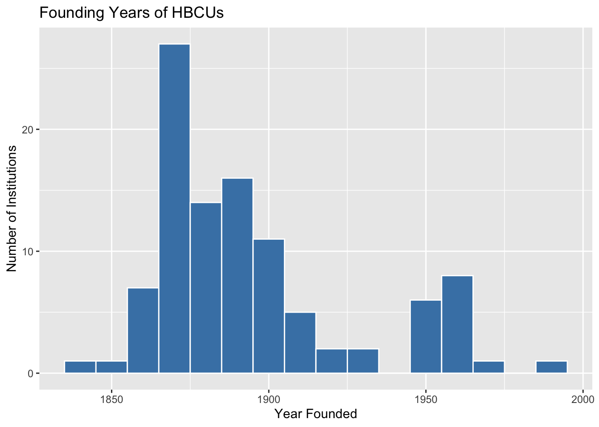
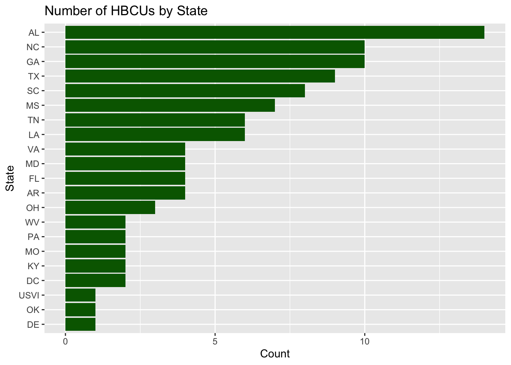
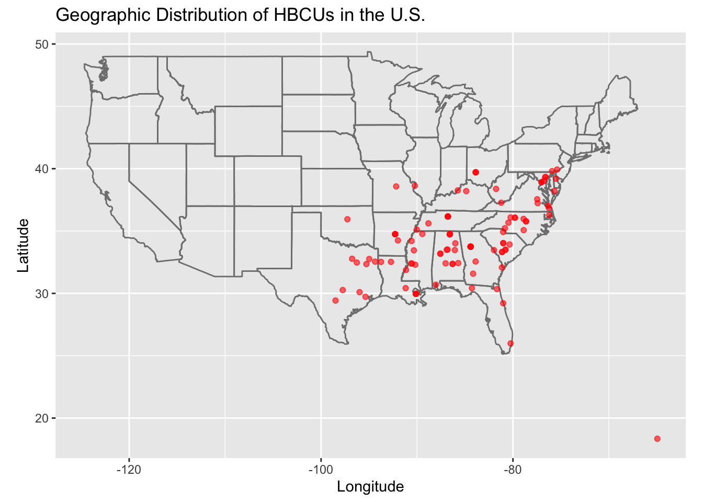

#install.packages("tidyverse")
#install.packages("lubridate")
library(tidyverse)
library(lubridate)Part 3: Working with large-scale data
Intro to Computational Studies in Education and the Social Sciences
Case Study: HBCUs and Educational Geography
In this section, we analyze data on Historically Black Colleges and Universities (HBCUs) to explore patterns in location, institutional type, and founding history.
Step 1: Load Packages
We’ll start with a guided example using data on Historically Black Colleges and Universities.
Step 2: Load the data
library(tidyverse)
hbcu <- read_csv("https://raw.githubusercontent.com/quant-shop/intro-comp-educ-soc/refs/heads/main/data/hbcu_data.csv")
# View the first few rows
head(hbcu)# A tibble: 6 × 7
name city state founded lat lon type
<chr> <chr> <chr> <dbl> <dbl> <dbl> <chr>
1 Alabama A&M University Normal AL 1875 34.8 -86.6 Public, 4 Year
2 Alabama State University Montgomery AL 1867 32.4 -86.3 Public, 4 Year
3 Albany State University Albany GA 1903 31.6 -84.2 Public, 4 Year
4 Alcorn State University Lorman MS 1871 31.9 -91.1 Public, 4 Year
5 Allen University Columbia SC 1870 34.0 -81.0 Private, 4 Year
6 American Baptist College Nashville TN 1924 36.2 -86.8 Private, 4 Year# Check structure
glimpse(hbcu)Rows: 102
Columns: 7
$ name <chr> "Alabama A&M University", "Alabama State University", "Albany …
$ city <chr> "Normal", "Montgomery", "Albany", "Lorman", "Columbia", "Nashv…
$ state <chr> "AL", "AL", "GA", "MS", "SC", "TN", "AR", "SC", "NC", "FL", "A…
$ founded <dbl> 1875, 1867, 1903, 1871, 1870, 1924, 1884, 1870, 1873, 1904, 19…
$ lat <dbl> 34.7834, 32.3643, 31.5785, 31.8769, 34.0298, 36.1659, 34.7465,…
$ lon <dbl> -86.5683, -86.2952, -84.1543, -91.1458, -81.0115, -86.7844, -9…
$ type <chr> "Public, 4 Year", "Public, 4 Year", "Public, 4 Year", "Public,…# Summary statistics
summary(hbcu) name city state founded
Length:102 Length:102 Length:102 Min. :1837
Class :character Class :character Class :character 1st Qu.:1870
Mode :character Mode :character Mode :character Median :1886
Mean :1895
3rd Qu.:1905
Max. :1988
lat lon type
Min. :18.34 Min. :-98.50 Length:102
1st Qu.:32.48 1st Qu.:-90.13 Class :character
Median :34.02 Median :-84.64 Mode :character
Mean :34.31 Mean :-85.13
3rd Qu.:36.17 3rd Qu.:-80.78
Max. :39.93 Max. :-64.96 Step 3: Clean the data
hbcu <- hbcu %>%
mutate(
founded = as.numeric(founded),
type = as.factor(type),
state = as.factor(state)
)Step 4: Basic Exploration
How many institutions are in the data set?
nrow(hbcu)[1] 102What is the distribution by HBCU type?
hbcu %>%
count(type) %>%
arrange(desc(n))# A tibble: 5 × 2
type n
<fct> <int>
1 Private, 4 Year 45
2 Public, 4 Year 40
3 Public, 2 Year 11
4 Private, Specialized 4
5 Private, 2 Year 2Step 5: Historical Analysis
When were the HBCUs founded?
hbcu %>%
ggplot(aes(x = founded)) +
geom_histogram(binwidth = 10, fill = "steelblue", color = "white") +
labs(
title = "Founding Years of HBCUs",
x = "Year Founded",
y = "Number of Institutions"
)
Step 6: Geographic Distribution
HBCUs by state
hbcu %>%
count(state, sort = TRUE)# A tibble: 21 × 2
state n
<fct> <int>
1 AL 14
2 GA 10
3 NC 10
4 TX 9
5 SC 8
6 MS 7
7 LA 6
8 TN 6
9 AR 4
10 FL 4
# ℹ 11 more rowsBasic visualization of HBCUs by state
hbcu %>%
count(state) %>%
ggplot(aes(x = reorder(state, n), y = n)) +
geom_col(fill = "darkgreen") +
coord_flip() +
labs(
title = "Number of HBCUs by State",
x = "State",
y = "Count"
)
Step 7: Mapping
#install.packages("maps", repos = "http://cran.us.r-project.org")
library(maps)hbcu %>%
ggplot(aes(x = lon, y = lat)) +
borders("state") +
geom_point(color = "red", alpha = 0.6) +
coord_fixed(1.3) +
labs(
title = "Geographic Distribution of HBCUs in the U.S.",
x = "Longitude",
y = "Latitude"
)
Case Study: Data on State School Districts
Step 1: Load the libraries
library(dplyr)
library(readr)
library(stringr)
library(janitor)Step 2: Load the data
district <- read.csv("https://github.com/quant-shop/intro-comp-educ-soc/blob/main/data/state-district-data.csv")
# district <- read.csv("../data/state-district-data.csv")Step 3: Clean the data
district_clean <- district %>%
clean_names() %>%
mutate(across(everything(), ~na_if(., "–"))) %>%
mutate(across(everything(), ~na_if(., "†"))) %>%
mutate(across(where(is.character), ~str_trim(.))) %>%
# Convert numeric-like columns
mutate(across(
contains("students") | contains("teachers") | contains("enrollment") | contains("ratio"),
~parse_number(.)
))Step 4: Feature engineering
We can create variables that answer educational questions.